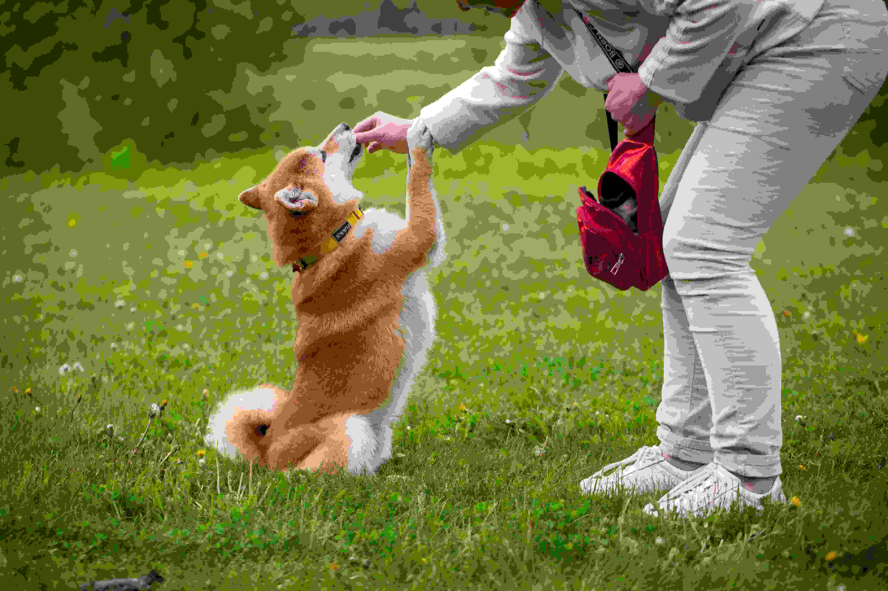

Walking your dog is not just a routine task—it’s a crucial part of their well-being. Here are some key benefits:
Bonding Time
Walking strengthens the bond between you and your pet (ASPCA, 2023).
Mental Stimulation & Behavioral Improvement
Exploring new environments keeps your dog engaged and reduces destructive behaviors (PetMD, 2023; AKC, 2023).
Physical Health
Walks help maintain a healthy weight, strengthen muscles, and support cardiovascular health (CDC, 2023).

Every dog has different exercise needs based on age, breed, and health. While high-energy breeds may need long and frequent walks, smaller or older dogs might require shorter strolls tailored to their comfort level.